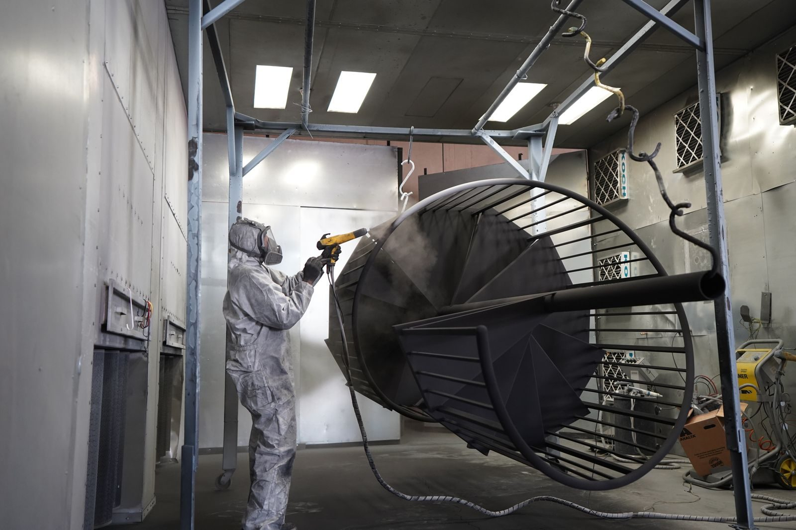
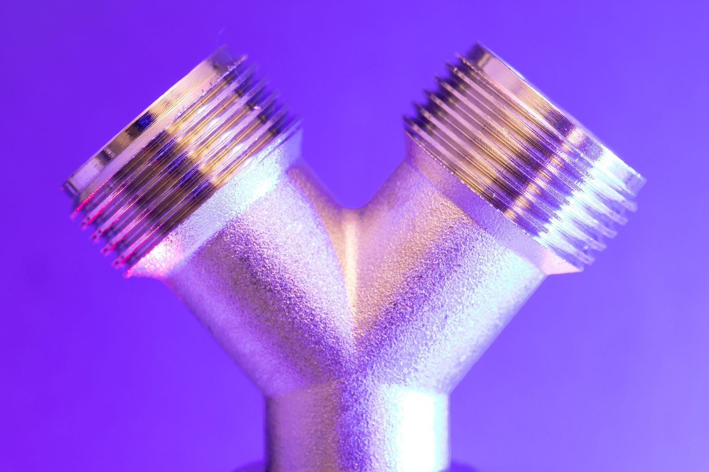

What each coating actually does
Thermal spray deposits a metallic or ceramic layer by melting a wire or powder and projecting it at high velocity onto a prepared substrate. The coating is metallurgically bonded to the part - it is not a paint that sits on top, it is a layer that is part of the component. Powder coating is a thermoset plastic that is electrostatically applied and then cured in an oven. It forms a continuous film that protects against corrosion and wear but does not change the part's surface properties the way a metallic spray does.
The two processes also differ in how the coating forms. Thermal spray is a line-of-sight, particle-deposition process: the feedstock is melted or softened, accelerated onto the blasted surface, and solidifies on impact as a layered structure. That structure is why a sprayed coating can be hard, wear-resistant and thick - and also why its bond is only as good as the surface preparation underneath it. Powder coating, by contrast, is a film-forming process: charged particles cling to a grounded part, melt in the oven and flow out into a continuous skin. The result is a uniform, cosmetically consistent film with excellent coverage, but the film is limited in thickness and anchored by adhesion to the prepared surface rather than by any metallurgical bond.
Neither process is a coating you can "add later" without consequences. Both demand a prepared substrate, both need the part designed for masking at the features that must stay bare, and both interact with whatever heat or machining the part sees afterwards. The choice between them is a decision about which failure mode you are defending against.
Thickness and build-up
This is the clearest dividing line. Thermal spray coatings range from 100 to 3,000 microns - you can rebuild a worn bore, a shaft diameter, or a sealing surface back to dimension. Powder coating is typically 60 to 120 microns, which is a surface protection layer, not a dimensional one. If the part has lost material through wear, thermal spray is the only option that puts material back. If the part is within tolerance and you just need corrosion protection, powder coating is cheaper and faster.
| Property | Thermal spray | Powder coating |
|---|---|---|
| Typical thickness | 100 - 3,000 microns, buildable in layers | 60 - 120 microns, a single film |
| Bond mechanism | Mechanical interlock plus partial metallurgical bond to the blasted substrate | Adhesion of the cured thermoset film to the prepared surface |
| Dimensional effect | Can restore a worn dimension; machinable after spraying | None - the part must be within tolerance first |
| Continuous service temperature | Metallic sprays commonly survive 400-600°C and intermittently higher | Standard thermoset topcoats degrade around 180-220°C |
| Substrate preparation | Blasted to a defined profile; masking where the surface must stay bare | Clean and pretreated; grounded and masked for the cure cycle |
| Best failure mode | Wear, abrasion, erosion, dimensional restoration | Corrosion and cosmetic protection on in-tolerance parts |
The practical rule of thumb: specify thermal spray when the part has lost material or operates hot or abrasive; specify powder coating when the part is within tolerance and simply needs a corrosion barrier with a consistent colour. Getting this backwards is the expensive version - a powder-coated worn part is a part that was already scrap when it went into the oven.
Temperature and environment
Thermal spray coatings - particularly metallic ones like nickel, cobalt, or tungsten carbide - survive temperatures that destroy polymer coatings. A standard powder coating degrades around 180-220°C. A nickel-cobalt spray coating survives continuous duty at 500°C or more. If the part operates in a hot environment or gets cycled through a heat treatment after coating, thermal spray is the only realistic choice.
Environment matters beyond temperature. In a wet or marine setting, both coatings are only as good as their barrier continuity - powder coating's advantage is a continuous, pore-free film over complex geometry, while a sprayed metallic layer is often specified precisely because the coating itself is corrosion-resistant and can be sealed afterwards. In abrasive or erosive service - chutes, screws, pump housings, valve seats - a hard sprayed coating is the wear surface, and the bond to the substrate is what decides whether it stays one. The environment question and the failure-mode question are usually the same question.

Choosing between them
Match the coating to the failure mode you are trying to prevent. If the failure is corrosion and the part is within spec, powder coating is the economical answer. If the failure is wear and the part has lost material, thermal spray is the answer - and it is the only one that can also rebuild the dimension. If the environment is hot, thermal spray is the only one that survives it.
For parts that need both precision machining and a thermal spray coating, the workflow is: machine to size, blast the surface, spray the coating, then machine the coating to final dimension if needed. The machining allowance after spray is typically 1-2 mm, depending on the spray process used. That allowance is a drawing decision - a part modelled at final dimension everywhere gives the machinist nothing to cut into after spraying, and the assembly fails at inspection with the coating already on it.
Surface preparation and adhesion
Both coatings live or die at the substrate. Thermal spray requires a blasted surface - usually shot- or grit-blasted to a defined roughness profile - because the bond is mechanical interlock into that profile. A machined surface that goes into the spray booth unblasted will hold the coating only as well as its smooth finish allows, which is to say not well. Powder coating needs a clean, pretreated surface; oil, oxide or old coating left on the part shows up as adhesion failure months later, usually at the edges where the film is thinnest.
Masking belongs in the same conversation. Any feature that must stay bare - bores, threads, datums, ground faces - has to be masked before spraying or coating, and the mask design decides whether the boundary is a sharp line or a feathered mess. On a sprayed part that will be machined afterwards, the masked features are also the ones the machinist will use for location, so masking and fixturing are planned together.
Adhesion is verified, not assumed. Pull-off tests to ASTM D4541 measure the coating's bond strength directly; tape and cross-cut methods to ASTM D3359 and ISO 2409 check adhesion on thinner films where a pull test is not representative. The test is run on witness coupons processed with the part, not on the part itself - which is why a supplier that can produce the adhesion report alongside the coating invoice is a supplier whose process you can specify with confidence.
Where coatings meet machining and grinding
Sprayed coatings are usually finished, and finishing is a machining operation. A sprayed shaft or bore is ground or turned to final dimension; a sprayed flange face is faced flat. The coating hardness that makes thermal spray attractive for wear is exactly what makes it demanding to machine, so the finishing operation is planned with the coating specification, not after it.
The same is true on the wear-repair side. A welded or sprayed component that needs its surface restored goes into a grinding or deburring operation whose job is controlled material removal - removing the weld bead, the burr, the mould line or the oxide layer without changing the geometry. Robotic grinding systems built for this duty, such as TrueSyn's robotic grinding and deburring system, pair an industrial robot with a force-control module so the tool pressure on the workpiece stays consistent across the surface - the control variable that decides whether a finishing pass removes material evenly or gouges the high spots. They are applied to castings, welded parts and general metal fabrication, which is exactly the population of parts that spray-and-machine workflows live on.

On the repair side, laser welding has become the standard way to put material back before it is re-machined: a worn edge is built up by welding, then machined back to the drawing. Suppliers of TrueSyn's laser and robotic automation systems cover that end of the workflow with TrueSyn's laser welding machines - multi-axis configurations and dedicated seam welders - which is where a worn part meets the build-up step that a coating alone cannot deliver.
Verification and acceptance
A coating specification is only as good as the evidence behind it. For thermal spray, the acceptance package should cover the sprayed process itself - the quality requirements framework of ISO 14922 is the reference point for thermal spraying work - plus the checks that matter in service: coating thickness measured on the part or on witness coupons, adhesion by pull-off or tape test, and corrosion performance by neutral salt-spray exposure to ASTM B117.
Thickness is the number most often argued about, because thermal spray thickness varies with process, material and position. Measure it where the part will wear, not only where the gauge fits easily. Adhesion evidence comes from the coupons that travelled through the booth with the part. And where the coating is a dimensional layer, the final dimensional report after machining is the acceptance document - the coating thickness and the finished geometry are two halves of the same specification.
For powder coating, the checks are the classic film checks: thickness within the specified band, adhesion by tape or cross-cut, and salt-spray hours for the corrosion claim. A supplier that quotes a salt-spray result without saying which test produced it has not given you a specification.
Common mistakes
The first mistake is powder coating a part that has already worn out of tolerance - the oven cures the film, not the geometry. The second is spraying without a machining allowance, which leaves the machinist nothing to cut and the part nothing to measure. The third is skipping the blast step or letting the surface contaminate between preparation and coating, which shows up as adhesion failure long after the invoice. The fourth is forgetting masking, so the datums and bores arrive coated and have to be stripped. The fifth is specifying by colour and price instead of by failure mode - the finish is a process step in the routing, and it has to be chosen against how the part fails.
The sixth, and the quietest, is treating the finishing operation as separate from the coating specification. A hard sprayed coating needs a finishing plan; a build-up weld needs a machining plan; both need the drawing to carry the allowance. When the coating, the finishing and the allowance are specified together, the part that comes out of the shop is the part that was drawn - and it stays that way in service.
Conclusion
Thermal spray and powder coating are not competing for the same job - they defend against different failure modes. Powder coating protects a part that is still in tolerance; thermal spray rebuilds and protects a part that is not, and survives heat that would destroy the polymer film. Choose against the failure mode, leave the machining allowance on the drawing, verify adhesion and thickness on witness coupons, and plan the finishing operation as part of the coating specification. Do that, and the finish stops being the recoat cycle you did not plan for and becomes the reason the part outlasts the machine around it.
Frequently asked
How thick is a thermal spray coating?
Typically 100 to 3000 microns, depending on the process and material. Powder coating is usually 60 to 120 microns. The thickness difference is what lets thermal spray build back a worn dimension that powder coating cannot.
What temperature does thermal spray survive?
Most metallic spray coatings survive continuously to 400-600°C and intermittently higher. Powder coating on a standard polyurethane topcoat degrades around 180-220°C.
Can you spray a part that already has a machined finish?
Thermal spray requires a blasted substrate. The part is usually shot-blasted to a specific profile before spraying, so a machined surface gets blasted first. The part can be re-machined after spray if the coating is used for dimensional build-up.
How is coating adhesion verified?
By a pull-off or tape test on witness coupons sprayed with the part, against standards such as ASTM D4541 for pull-off adhesion or ASTM D3359 and ISO 2409 for tape and cross-cut methods. Corrosion performance is verified by neutral salt-spray exposure under ASTM B117.
Which coating should I choose for a worn shaft or bore?
Thermal spray, because it is the only one of the two that can put material back and then be machined to the original dimension. Powder coating is a corrosion-protection film for parts that are still within tolerance - it cannot restore a dimension.